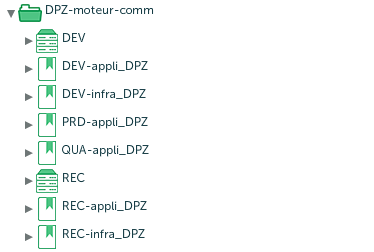
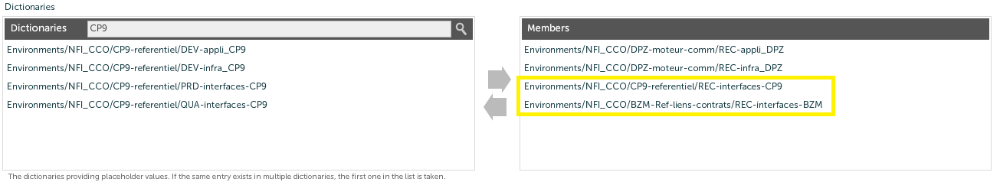
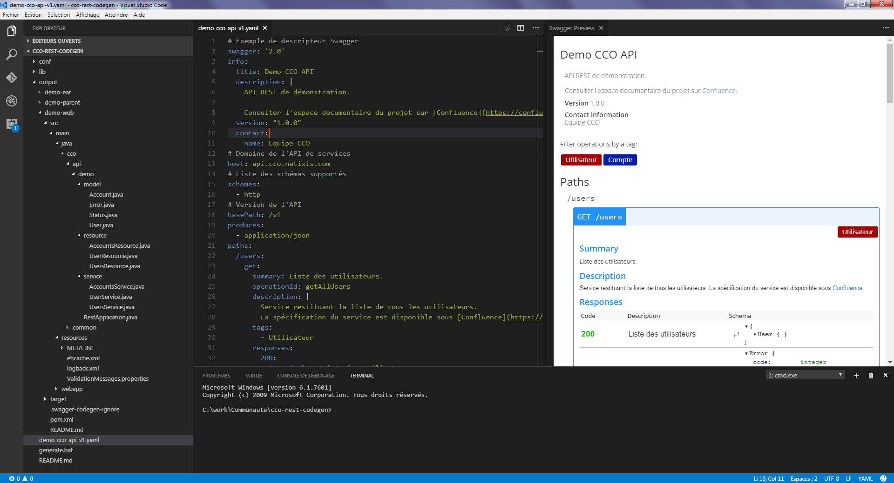

11 à 12 — #2017-1
Au programme :
- Normes XL-Deploy
- Conception d'une API de services REST
- Outil de cartographie du SI CCO
Pourquoi normaliser 1/2 ?
- Centraliser les URLs des endpoints de services web (WS SOAP / REST)
- Centraliser le paramétrage des sources de données (datasources)
Pourquoi normaliser 2/2 ?
- Avoir une grille de lecture cohérente des paramètres applicatifs
- Propager les mises à jour des endpoints des services mutualisés
Dictionnaires XL-Deploy pour chaque application
- un dictionnaire appli et/ou infra :
- <env>
-appli_<iua> - <env>
-infra_<iua>
- <env>
Dictionnaires XL-Deploy pour chaque application
- où <env> vaut :
DEV: environnement de développementREC: environnement de recetteQUA: environnement de qualificationPRD: environnement de production

Dictionnaires interface 1/3
Toute application exposant une API de services ou des sources de données mutualisées doit exporter un dictionnaire interface :
- <env>
-interfaces-<iua>
Dictionnaires interface 2/3
Les noms de paramètre d'un dictionnaire interfaces sont normalisés :
<code_app>.<type>.<ss-type>.<env_logique>.<fonction>.<ss-fonction>.<version>
Exemple : REC-interfaces-BZM

Dictionnaires interface 3/3
Toute application consommant des services ou des sources de données mutualisées doit importer les dictionnaires interfaces afférents.
Référence et exemples complets sur https://confluence.eqsmut.intranatixis.com/display/ECCO/XL+Deploy
Normes de développement d'une API REST chez CCO
- cf. normes de développement REST en contexte Natixis
- au niveau CCO, ces normes ont été enrichies pour :
- préciser certains points sujets à interprétation
- proposer des solutions pratiques pour aller au delà des aspects normatifs
API REST : points abordés par les normes 1/2
- comment utiliser les verbes HTTP (
GET,POST,PUT,DELETE) - comment nommer les ressources (URI)
- comment versionner focus à suivre
- comment utiliser des codes retour HTTP
- format des échanges (JSON / UTF-8)
API REST : points abordés par les normes 2/2
- format des messages d'erreur
- comment gérer la pagination
- support du multilinguisme
- contexte technique
- faciliter l'exploitation de l'API focus à suivre
API REST : focus sur le versioning
- versionner le moins possible [préco Natixis]
- numéro de version dans l'URL : [préco Natixis]
- exemple :
http://api.ref-client.cco.natixis.com/v1/client/65318
- exemple :
- pas de changement de version en cas : [préco CCO]
- d'ajout de paramètres de requête
- d'ajout d'attribut dans les objets métiers
API REST : focus sur l'exploitation
- identifiant de corrélation dans les logs : [préco CCO]
- en-tete
X-Request-Idcontenant un identifiant unique de requête
- en-tete
- faciliter le monitoring : [préco CCO]
- exposer un service
/pingpour savoir si l'API est accessible - exposer un service
/healthcheckpour vérifier la disponibilité de composants vitaux de l'API (ex: base de données)
- exposer un service
API REST : un générateur de code ? 1/2
- permettre de démarrer rapidement un projet respectant les normes CCO
- générer le code d'une API REST/JSON déployable sous JBoss EAP 7 (Java EE 7 / JAX-RS 2.0)
- approche contract first
- utiliser Swagger 2.0 comme spécification pour décrire et documenter une API
API REST : un générateur de code ? 2/2
Cartographie du SI CCO
Disponible temporairement sur http://swriziv01:9090/
Merci !
Nous retrouver sur Confluence :
https://confluence.eqsmut.intranatixis.com/pages/viewpage.action?pageId=21006058